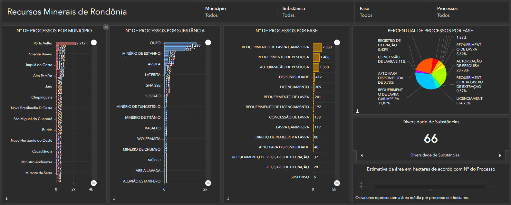
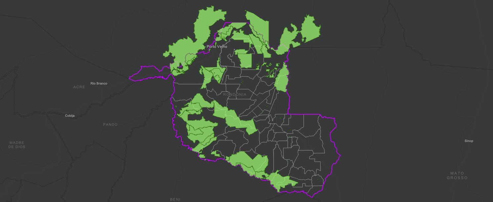
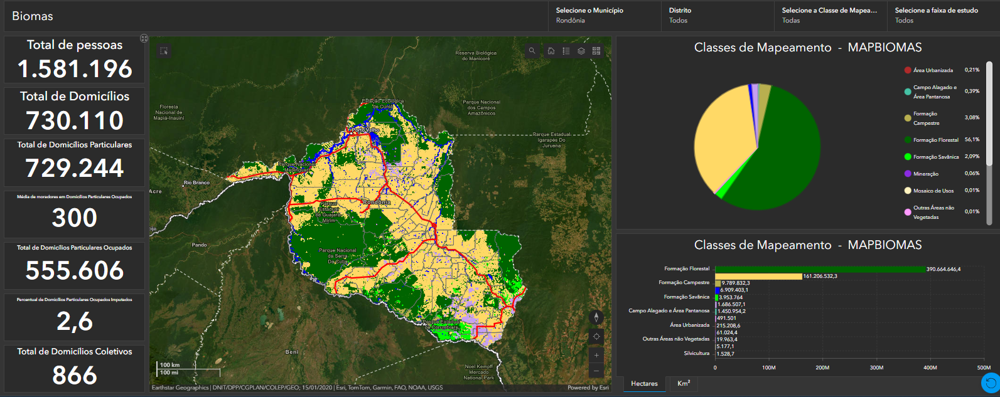

Análises ambientais utilizando Sistemas de Informação Geográfica (SIG) para monitoramento territorial, conservação dos recursos naturais e apoio à tomada de decisão.
A integração entre geotecnologias, imagens de satélite e dados ambientais permite compreender as transformações do território e desenvolver estratégias sustentáveis.
Monitoramento de vegetação, áreas degradadas e mudanças no uso do solo.
Análise de imagens de satélite para identificação de alterações ambientais.
Mapeamento de rios, nascentes e áreas de preservação ambiental.
Informações estratégicas para políticas públicas ambientais.
O SIG possibilita integrar informações espaciais, dados ambientais e análises territoriais para gerar conhecimento estratégico sobre o território.
Através de mapas inteligentes é possível identificar riscos, acompanhar impactos ambientais e apoiar ações de preservação.



Mapas Ambientais
Projetos Analisados
Bases Geográficas
Áreas Monitoradas
Análise territorial de recursos minerais e potencialidades geológicas por meio de dados geoespaciais.
Explorar mapa →Monitoramento de áreas protegidas e análise territorial para apoio à conservação ambiental.
Explorar mapa →Análise integrada de dados geoambientais, aptidão agrícola dos solos e produção pecuária.
Explorar mapa →O SIG possibilita integrar informações espaciais, dados ambientais e análises territoriais para gerar conhecimento estratégico sobre o território.
Através de mapas inteligentes é possível identificar riscos, acompanhar impactos ambientais e apoiar ações de preservação.